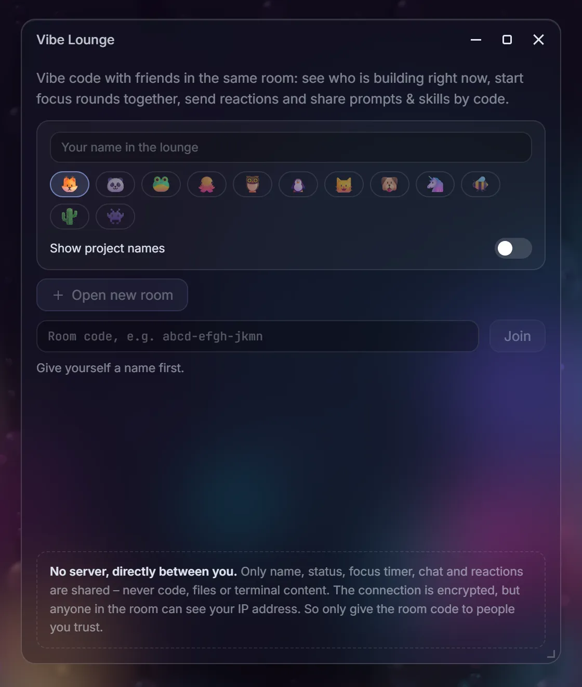
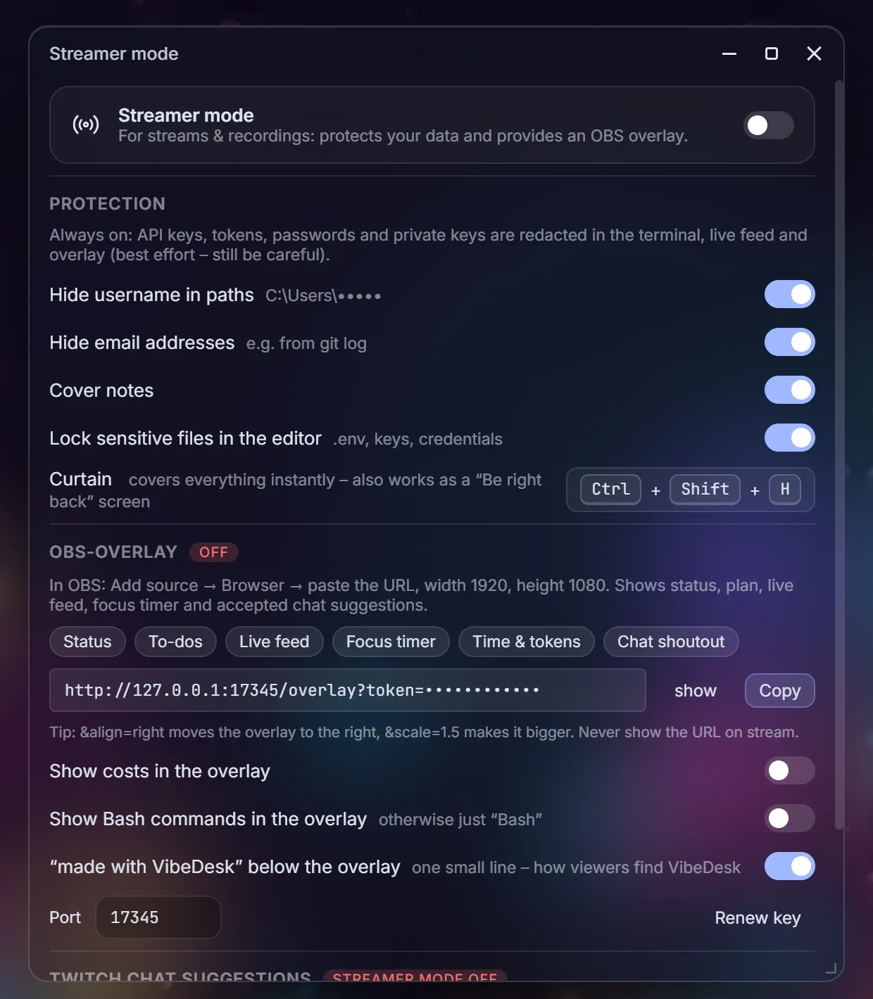

VibeDesk/Social & streaming
Show what you build – if you want to.
Let friends on Discord see what Claude is doing right now, co-work in a shared lounge, put a calm overlay on your stream and get a weekly look back. Every part is optional and off until you switch it on.
Live from Claude
“writing code”, “running commands”, “sends 3 agents off”.
Your friends see what Claude is doing, the current task from its todo list with progress, and your streak. File names and commands never leave your PC; in private and streamer mode the task is left out too.
Discord
Your status, your words.
Write your own lines with placeholders, pick images and status icons, or start from a preset – Live, Detailed, Minimal, Focus, Numbers or Private. Separate variants with || and Discord rotates between them every 20 seconds. A live preview shows exactly what others will see.
- Discord webhook messages when a session waits for you, and a daily summary.
- Use the hosted VibeDesk app or your own Discord app ID.

Vibe Lounge
Co-work with friends, no server in between.
Open a room and share its code. In the lounge you see who is building right now, start focus rounds together, chat and send reactions, and share prompts and skills by code – always with a preview before anything is applied.
- Peer-to-peer: public Nostr relays only help you find each other (encrypted with the room code), then WebRTC connects you directly.
- Only name, status, focus timer, chat and reactions are shared – never code, files or terminal content. Anyone in the room can see your IP address, so only share the code with people you trust.

Streaming
A calm overlay, and chat that can suggest.
Add the OBS overlay as a browser source: status, plan, live feed and focus timer. Viewers can suggest tasks with !vibe … in Twitch chat – nothing happens until you accept.
Streamer mode
Stream without leaking secrets.
API keys, tokens, passwords and private keys are redacted in the terminal, live feed and overlay. Streamer mode can also hide your user name in paths and e-mail addresses, cover notes and lock .env files in the editor.
- A curtain covers the whole screen instantly: Ctrl + Shift + H – also handy as a “be right back” screen.
- Costs and Bash commands stay out of the overlay unless you want them.

Vibe Wrapped
Your week, on one quiet card.
Every week VibeDesk sums up your active time, prompts, changed files, favourite tool, top projects and a persona – and how much Claude learned about you. Copy it as an image and share it, or just look.
- Find it in the stats window, the command palette, and once a week as a hint.
Let Claude work.
Step in when it counts.
Free for Windows 10 and 11.